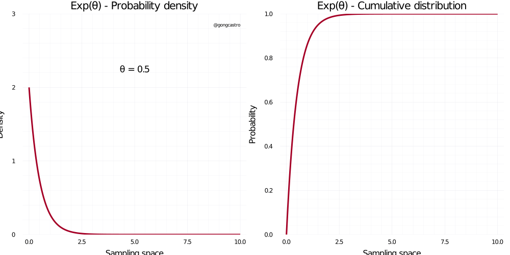
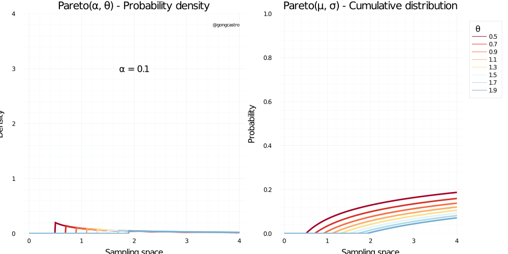

Exploring probability distributions through animations in Julia
Visualising what different probability distributions look like under different parameters can be helpful when picking a likelihood function for you Bayesian analysis. I present some animations generated with Julia using Distributions.jl.
In the last couple of years I went down the rabbit hole of Bayesian statistics. Although I’ve made considerable progress, as compared to where I started, I still (and will) struggle understand some basic concepts beyond some shallow, abstract idea about what they mean. One of the first challenges I encountered in my first steps was becoming aware of how many probability distributions there are, and the fact that one should pick one should carefully chose which one to use when trying to estimate some parameter.
Ben Lambert’s excellent book A Student’s Guide to Bayesian Statistics offers a chart showing many of the most popular distributions, and how they relate to each other (pp. 145, see Figure 1 below for a similar chart). They then describe each distributions very plain terms, which is to be grateful for (many introductory books get lost in the details when describing likelihood distributions). However, when the moment arrives to pick a distribution in practice, I still struggle to see the risks and benefits of using each distribution. Will it adequately cover the sampling space of my parameter? Can I parameterise it so it allocates most of the probability around the regions I consider more likely? Am I actually able to interpret the values of the parameters of the distribution and map them to my research question?

My first step to answer these questions is to explore what a given distribution looks like under different parameters. This might give us a hint on the range of values it covers and the “shape” of the likelihood function. As I mentioned in previous posts, I struggle to grasp statistical/mathematical concepts in absence of a good visualisation. I generated some animations in Julia using the Distributions.jl package, which provides a substantial amount of implemented likelihood functions. The only reason I chose Julia is that I’m trying to learn it step by step and I found this silly project a nice opportunity to do so. You can see the code at the end of this article or on the accompanying GitHub repository. I posted this one Twitter (see below) and got a good response, so I decided to extend a bit the contents. Enjoy! :)
When specifying priors for a Bayesian analysis, it's easy to get lost in the vast family of likelihood functions!
— Gon García-Castro ((gongcastro?)) September 3, 2021
I generated some animations in #JuliaLang (JuliaLanguage?) to help me see how some distributions look like under different parameters (using Distributions.jl ). 🧵 pic.twitter.com/8i1wces4oi
Normal distribution
Well, we all know this one. This is a continuous distribution that covers the whole range of real numbers. Why is it used so often? Because most data we find in real life are frequently quite plausible under a normal distribution. Critically, the normal distributions makes very few assumptions about the data we are trying to model. Why is it so? As Richard McElreath explains in Statistical Rethinking1 (section 4.1), there are many ways a data generating mechanism might spit out normal data, even when each of the individual observations are not drawn from a normal distribution. This is because when the data are the result of adding (or multiplying), the resulting distribution tends to converge to a normal one. As McElreath points out, many phenomena we observe in nature is the result of adding multiple small factors together (e.g., someone´s height is the result of adding multiple genetic and environmental factors together). Basically, whenever you are not sure about what distribution suits your data better, the normal distribution might be a good first approximation.
1 You can also take a look a his excellent lecture on his YouTube channel, which cover much of the contents in the book!
\[ f(x) = \frac{1}{\sigma \sqrt{2\pi}} e^{-\frac{1}{2}\big(\frac{x-\mu}{\sigma}\big)^2} \]
Where \(f(x)\) us the probability density function, is the standard deviation, and is the mean.

Gamma distribution
\[ f(x) = \frac{\lambda(\lambda x)^{\alpha - 1} \;e^{-\lambda x}}{\Gamma(\alpha)} \]
This distribution only covers positive values, and has two parameters. It is in important one, as many other distribution, like the exponential, are specific cases of this one. In applied contexts, this distribution is used to model waiting times, and the incidence of some diseases, among others. In general, any continuous variable whose mode is expected to be closer rather than farther from zero can potentially be modelled by a Gamma distribution.

Inverse-gamma distribution
This distribution is a reciprocal transformation of the Gamma distribution, and has similar properties. In can’t find many uses for this distribution if not as a conjugate prior for the variance of a normal distribution.
\[ f(x) = \frac{\beta^{\alpha}}{\Gamma(\alpha)} x^{-\alpha-1} \;exp\Bigg(-\frac{\beta}{x}\Bigg) \]

Exponential distribution
This distribution is continuous and cover only positive values. It places most of the likelihood around zero, which makes it very convenient for modelling small positive quantities such as small distances or time intervals or standard deviations. Its shape depends on only one parameter, \(\lambda\), which makes it simpler to parameterise (as compared to others like the Beta distribution). It has an inconvenient, though: it is a bit difficult to interpret what the value of this parameter means in the context of our research question (i.e., theory). While one can interpret the mean and standard deviation of the normal distribution as where the most likely value of the distribution lies and its associated uncertainty, respectively, the \(\lambda\) parameter is not that trial to interpret: it doesn’t relate to the most likely values of the distribution linearly, and it cannot be interpreted a a rate or any other occurrence metric. What works for me is to take a look at the resulting distribution and see whether it captures my expectations about the data I’m about to observe.
\[ f(x) = \lambda e^{-\lambda x} \]

Student-t distribution
\[ f(x) = \frac{\Gamma((\upsilon+1)/2)}{\sqrt{\upsilon \pi} \;\Gamma (\upsilon /2)} \]

Beta distribution
\[ f(x) = \frac{x^{\alpha-1} \;(1-x) \;x^{\beta - 1}}{B(\alpha, \beta)} \]

Cauchy distribution
\[ f(x) = \frac{1}{\pi \gamma \Bigg[1 + \big( \frac{x-x_0}{\gamma} \big)^2 \Bigg]} \]

Frechet distribution
\[ f(x) = \alpha \; x^{-1-\alpha} e^{-x^{-\alpha}} \]

Pareto distribution
\[ f(x) = \frac{\alpha \;x_{m}^{\alpha}}{x^{\alpha+1}} \;\text{for} \; x > x_m \]

Weibull distribution
\[ f(x) = \lambda \alpha(\lambda x)^{\alpha-1} \; e^{-(\lambda x)^{\alpha}} \]

Tri-weight distribution

Rayleigh distribution
Similar to Gamma or Poisson, the Rayleigh likelihood function covers all positive values and relies on only one parameter, \(\sigma\), to determine its shape and location. Lower values of \(\sigma\) make the distribution lie closer to zero and be less disperse. Despite its seemingly less interesting appearance, this distributions is extensively used for modelling vibrational data such as water displacement, assessing the quality of railroads, or analysing MRI data2.
2 See https://www.sciencedirect.com/topics/engineering/rayleigh-distribution
\[ f(x) = \frac{x}{\sigma^2} \; e^{-\frac{x^2}{2\sigma^2}} \]

Wigner semi-circle distribution
This distribution is, well, a semicircle when \(R = 1\), were \(R\) is the radius of the semi-circle. All values of the sampling space outside the [-R, R] interval have zero probability. I can’t say much more than that. I have no idea why this distribution even exists, and I have struggled to find documentation about it in the reasonably long period of time I searched for it. I suspect this distribution might be useful for geo-spatial modelling, where one wants to actually model the shape of an object. Otherwise, I’m lost.
\[ f(x) = \frac{2}{\pi R^2} \; \sqrt{R^2 - x^2} \\ \text{where} \; \pi \; \text{is the actual number } \pi \text{, not a parameter} \]

Interestingly, this distribution can be considered a particular case3 of the Beta distribution, so that where \(\alpha = \beta = 3/2\), then \(X = 2RY – R\).
3 See https://handwiki.org/wiki/Wigner_semicircle_distribution
Triangular distribution
As a curiosity, there is such thing as a triangular distribution. It does look triangular, as can be seen in the Wikipedia article linked above. This distribution is not implemented yet in Distributions.jl. As with the semi-circle distribution, I struggle to see any context where this distribution might be useful beyond geo-spatial modelling.
\[ f(x) = \begin{cases} 0 & \text{for} \; x < \alpha, \\ \frac{2(x-a)}{(b-a)(c-a)} & \text{for} \; a \leq x < c, \\ \frac{2}{b-a} & \text{for} \; x = c, \\ \frac{2(b-x)}{(b-a)(b-c)} & \text{for} \; c < x \leq b, \\ 0 & \text{for} \; b < x \end{cases} \]
Some final remarks
Some well-known distributions are missing (e.g., Dirichlet, Wishart, Beta-binomial). This is because they have not yet been implemented in Distributions.jl, and I sadly lack the knowledge to contribute on this. Still feel free to explore the Wikipedia or other resources to get an idea of how these distributions look like in what contexts they are useful!